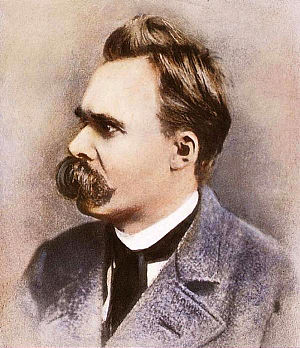

프리드리히 빌헬름 니체(Friedrich Wilhelm Nietzsche,
1844년 10월 15일 ~ 1900년 8월 25일)는 독일의 문헌학자자 철학자이다.
서구의 오랜 전통을 깨고 새로운 가치를 세우고자 했기 때문에 '망치를 든 철학자'라는
별명이 있다.
그는 그리스도교 도덕과 합리주의의 기원을 밝히는 작업에 깊이 매진하였고,
이성적인 것들은 실제로는 비이성과 광기로부터 기원했다고 주장했다.
관념론과 기독교는, 세계를 두 개로 구분짓는다. 이를테면 기독교는 이승 이외에도 하늘나라가 있다고 가르친다. 또한 플라톤은 세계를 현상계와 이데아계로 이분한다. 니체는 이러한 구분에 반대하며 '대지에서의 삶을 사랑할 것'을 주창하였다. 또한 현실에서의 삶을 비방하는 자들을 가리켜 퇴락한 인간[2]이라 부르며 비판하였다. 이렇듯, '영원한 세계'나 '절대적 가치'를 인정하지 않는다는 점에서 니체는 관념론적 형이상학에 반대한다. 즉, 기독교에서 말하는 ' 하나님의 왕국' 혹은 칸트가 말하는 '목적의 왕국' 등에 반대하는 것인데, 특이하게도 부르 주아 민주주의를 기독교의 아류로 보고 비판하기도 했다. 
"